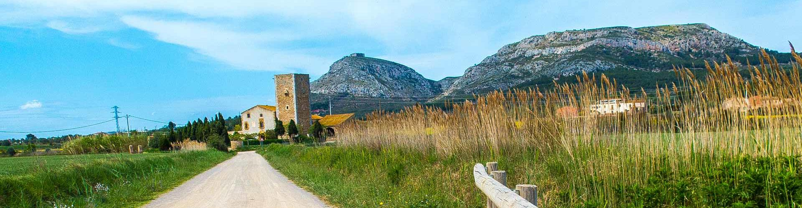

Ruta · Montgrí
Aquesta ruta plana per fer en bicicleta, transcorre majoritàriament entre camps de conreu de fruiters, cereals i arrossars. La ruta ens portarà fins a la desembocadura del riu Ter primer, i en…